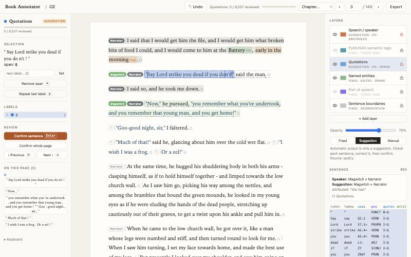
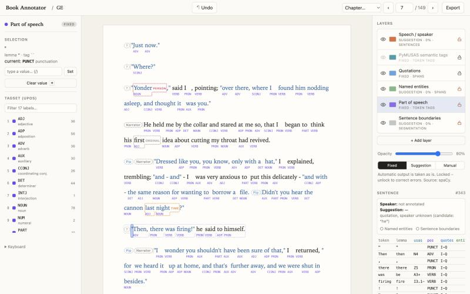
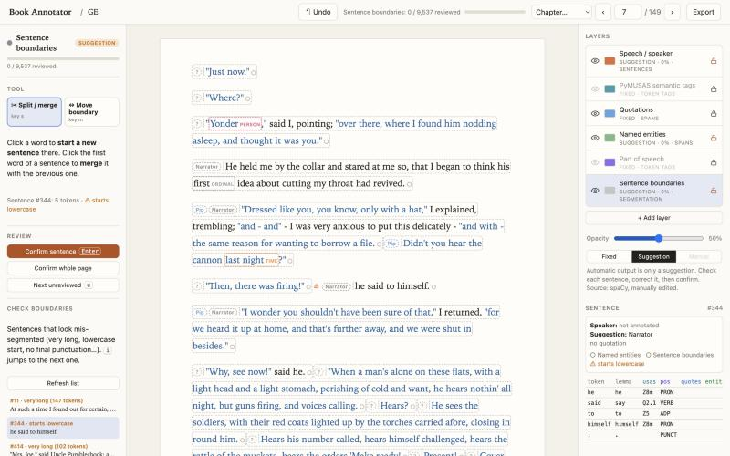

Book Annotator turns a plain-text book into an annotated corpus. Who speaks each sentence, sentence boundaries, part of speech, named entities, semantic fields: each in its own layer, automatic where possible, reviewed by you where it matters.

Load a .txt file. spaCy segments and tags it in about 20 seconds per novel; you take it from there.
Mark who speaks each sentence: characters, narrator or both. Suggestions come from quotation marks and attributions like "… said Joe"; keys 0–9 assign speakers.
Every annotation type is a layer you can show, hide, fade, lock and reorder. Tags appear under the words, spans as highlights or underlines.
Use automatic output as is, review it sentence by sentence, or annotate from scratch, decided per layer. Progress is tracked and exported.
Split, merge and move boundaries with one click. A checker lists suspicious sentences, such as lowercase starts and missing punctuation.
Add PyMUSAS (USAS semantic fields, incl. multi-word expressions), match your own lexicon, or create empty layers for your own categories.
Tab jumps to the next annotation of the active layer, Enter confirms, u finds the next open sentence, ⌘Z undoes anything.
CoNLL-style TSV per book (one column per layer, BIO spans, speakers, review status) and JSONL for the whole corpus.
Plain Python and JavaScript, no build step. New automatic layers are a single function in annotators.py.
Each layer says how far its content can be trusted, and that status travels with your export.


Select a layer and the tool panel and shortcuts change with it.
| Layer | Tools |
|---|---|
| Speech | character list with aliases, suggestions, "same as previous" |
| Sentences | split / merge, move boundary, suspicious-sentence list |
| POS, PyMUSAS | tagset with descriptions, the tagger's alternatives |
| Entities, spans | label palette, add / relabel / remove, spans on the page |
Literary corpora are often under copyright and research data deserves care. Book Annotator is built so that you never have to trust a server.
127.0.0.1 only and offers no option to change that.Details: SECURITY.md.
You need Python 3.10–3.12. The simplest route uses uv.
uv tool install --python 3.12 "bookannotator[usas] @ git+https://github.com/gi47huwi/BookAnnotator"bookannotator serve.txt file (UTF-8, paragraphs separated by blank lines, e.g. from Project Gutenberg) and start annotating.
Your data is stored in ~/BookAnnotator/books/; back it up.Without uv, or for development, see the README.
If Book Annotator helps your research, please cite it. Citation data is in CITATION.cff; GitHub's "Cite this repository" button gives BibTeX and APA.